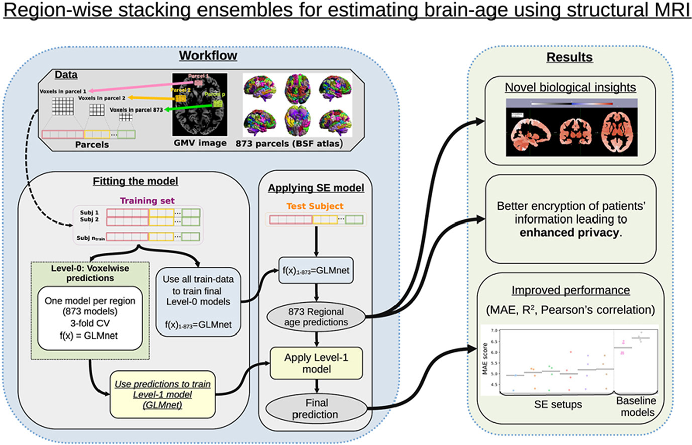
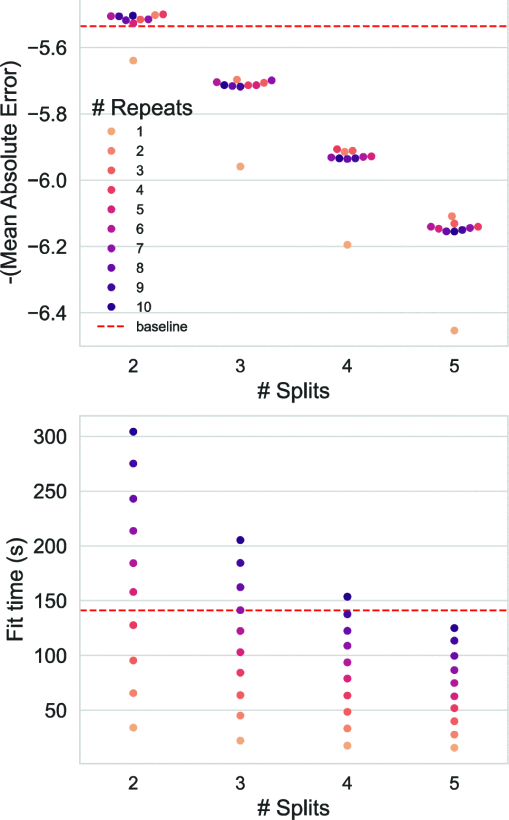
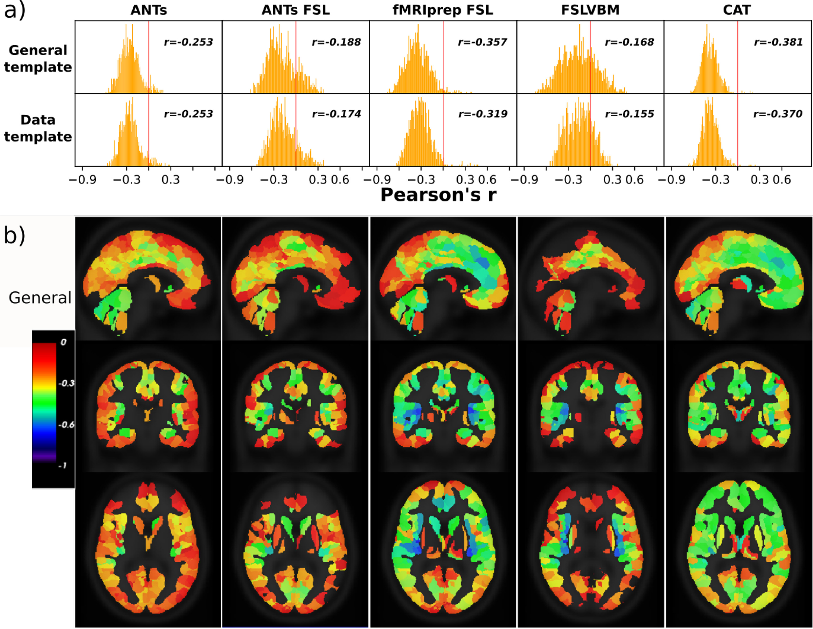
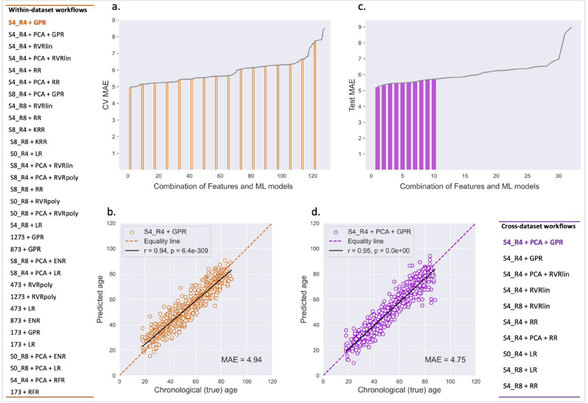

Publications

G. Antonopoulos et al.
Computers in Biology and Medicine · 2025

F. Raimondo, G. Antonopoulos, S. B. Eickhoff, K. R. Patil.
IEEE Xplore · 2024
E. Doering, G. Antonopoulos, et al.
Journal of Nuclear Medicine · 2024

G. Antonopoulos, et al.
NeuroImage · 2023

S. More, G. Antonopoulos, et al.
Georgios Antonopoulos, Athena Demertzi et al.
Brain · Volume 138, Issue 9 · September 2015